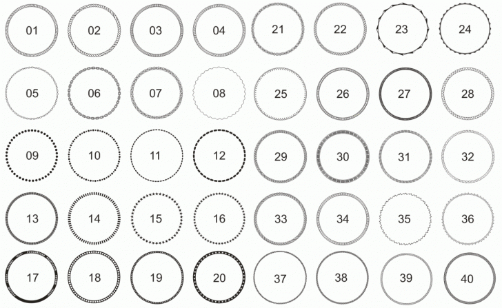

Шаблоны печатей
Vertical-align / 09.04.2013, 13:46
Форум:
Версия программы:
16.3.0.1114 (sp3)
Не подскажете где скачать бесплатные шаблоны круглых печатей, окантовки.
Не подскажете где скачать бесплатные шаблоны круглых печатей, окантовки.
Печати на то и печати, чтобы обладать индивидуальностью.
Там весь шаблон — это внешнее кольцо диаметром 38 - 40 мм, толщиной ок. 0,4 мм.
Часто бывает второе кольцо потоньше (0,25 - 0,3) мм, отстоящее от первого с шагом примерно на 1 мм.
И оттачивайте навык работы с текстом вдоль пути.
Solowejka, тут ты не совсем прав, как раз таки печати зачастую делаются именно по шаблону. Клиент просто выбирает из каталога какого вида он печать хочет, а потом туда просто забиваются его данные.
Я многие годы не пользовался CorelDraw и нет времени тратить на это. Поэтому спрашиваю о шаблонах. Никто не даст ссылку? :)
Вот такие бордеры хотелось бы. Наверняка где-то есть бесплатные шаблоны. Подскажите, пожалуйста, если знаете где скачать.

Вообще-то для вояния печатей есть идиальная прога Print Seal Studio.
Там всё просто как две копейки!
Но можно и в Corel - тут действительно нужно оттачивать мастерство!
Года два назад я плотно занимался сим промыслом.
Для печатей не требуется качественного вектора, а вполне достаточно растра (GIF - 300 dpi), т.к. размер (по ГОСТу) - 38 мм, очень редко 40 мм.
Ну, штампики считать не будем.
А что касается шаблонов - чиркани куда скинуть - этого добра много.
PavDmit, бордеры я уже нашёл тут.
Мне бы несколько разных шаблонов печатей, чтобы самому не мучиться, а просто текст поменять. Вот сюда пожалуйста можете мне пульнуть :) : Generalissimus-Marshal-General@yandex.ru
Шуточные печати
Solowejka , отличные печати! Но почему не в cdr? Можете дать в cdr? :)
В jpg я и сам их вижу много в инете.
Vertical-align, забирайте.
Solowejka, дженьки вери мач! :)
Страницы